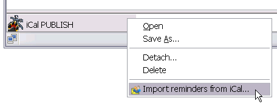
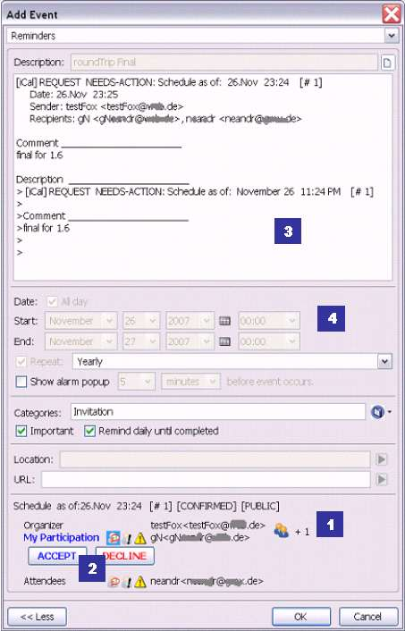
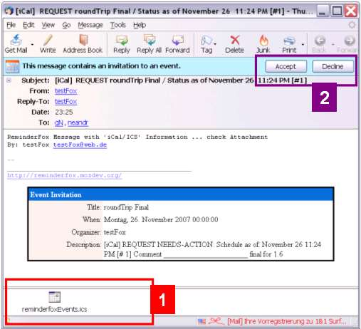
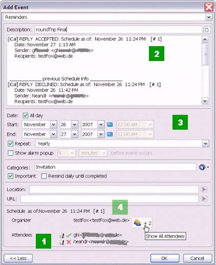

Email Integration - Invitations
Email Integration - Invitations
Email Integration - Invitations
Email Integration - Invitations
Content |
It is possible to send calendar invites based on reminders. This is useful if an event in your reminders list involves other people, and you would like those people's calendars to have an entry for this reminder.
To send a calendar invite based on a reminder, select a reminder or group of reminders in the List Window, right-click and select 'Export/Send Reminder'.

Click 'Send/Invite. If prompted, select the Mozilla-based email client installed on your computer. (Thunderbird, SeaMonkey, PostBox). Compose and send your message as normal.
When a recipient receives an email with a reminder invitation, this invitation will appear as an attachment to that email. The attachment will be an .ics (iCal) file. To process the invitation, the recipient must right-click on the attachment and select 'Import reminders from iCal...'.

The 'Import reminders from iCal...' action will open the Add Reminder dialog and allow the recipient to 'Accept' or 'Decline' the invite.

Alternatively, if the recipient is running Mozilla's Lightning Calendar software, the attached reminder data can be processed by clicking the 'Accept' button at the top of the message.

As recipients either Accept or Decline the invitation, the organizer will receive e-mail notifications of the responses. In addition, the organizer is able to see a summary of the responses at the bottom of the reminder details.
